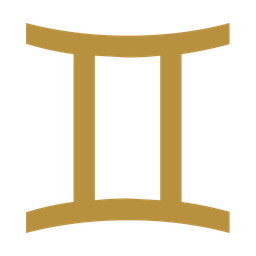

Timing Grimoire
October 13
Born on October 13th
The birthday of the polished diamond
Profile
Those born on October 13 are hardworking, tenacious individuals who are willing to put in the time and effort to hone their skills and polish their talents until they shine like diamonds. They understand that lasting success comes not from natural talent alone but from discipline, perseverance and the willingness to learn from every experience, both good and bad.
They have a quiet intensity about them that others find compelling. They are not flashy or attention-seeking; their power lies in their depth, their substance and their unwavering commitment to excellence. When they commit to a goal, they pursue it with a single-minded focus that is both impressive and, at times, a little intimidating.
Despite their polished exterior, they are not superficial. They have a rich inner life and a deep need for emotional connection and meaning. They can, however, be perfectionists who are their own harshest critics, and this can lead to periods of anxiety and self-doubt. They need to learn to appreciate their progress rather than constantly focusing on how far they still have to go.
Before age thirty-nine they are likely to be most focused on issues of emotional intensity and personal transformation. During this period they are particularly driven and ambitious, and they should be careful not to neglect their personal relationships or their health. After forty, a turning point arrives that highlights a need for greater optimism, freedom and expansion. Whatever age they are, when they learn to balance their drive for perfection with self-compassion and gratitude, they truly become the polished diamonds they are destined to be.
Your Greatest Challenge
Being kind to yourself.
The Way Forward
Understand that self-compassion is not self-indulgence. Treating yourself with the same kindness you show others will make you stronger, not weaker.
You Are Drawn to People Born Between May 21 and June 20
Those dates fall under 
Luck Maker: Celebrate Small Victories
Lucky people celebrate every step forward, no matter how small. This positive energy builds momentum and attracts even greater success.
At Your Best
Disciplined, tenacious, substantial.
On the Dark Side
Perfectionist, anxious, self-critical.
Love: Worth the Wait
Those born on this day may take their time finding the right partner, but when they do commit they are devoted, loyal and deeply loving. They need a partner who appreciates their depth and substance and who is patient enough to wait for them to open up. Once they feel safe and secure, they reveal a warmth, passion and tenderness that can be truly breathtaking.
Health: The Importance of Downtime
These individuals push themselves hard and can be prone to stress, burnout and exhaustion. It is essential for them to schedule regular periods of downtime and relaxation. A balanced diet rich in fruits, vegetables, whole grains and omega-3 fatty acids will support their demanding lifestyle. Regular exercise is important, but they should choose activities that they enjoy rather than treating exercise as yet another task to be perfected. Activities like walking in nature, swimming and gentle yoga can be particularly restorative. They should also limit their intake of caffeine and alcohol, which can exacerbate anxiety. Wearing, meditating on and surrounding themselves with the color Orange will encourage warmth, spontaneity and joy.
Career: Born Craftspeople
These individuals excel in careers that reward skill, patience and attention to detail, such as craftsmanship, engineering, science, medicine, architecture, music and writing. Their tenacity also makes them well suited to careers in business, finance, law and management. Their desire for meaning may draw them toward education, counseling, social work and the healing professions.
Destiny: To Demonstrate the Power of Perseverance
The life path of those born on this day is to learn to balance their drive for excellence with self-compassion and appreciation for the journey. Once they achieve this balance, their destiny is to demonstrate to others the extraordinary results that can be achieved through discipline, perseverance and a commitment to continuous improvement.
Power Thought
I appreciate how far I have come and I celebrate every step forward.